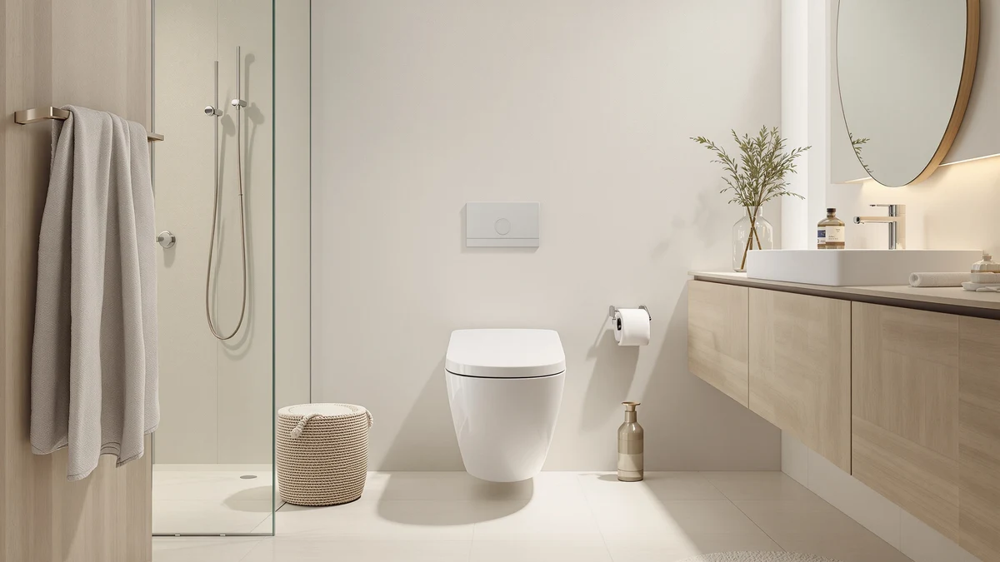

HOROW T0338WBC Elongated One Review (2026): Worth It?
Prices and picks verified as of October 2026. Independent, reader-supported reviews.


Quick Answer
The $309.00 HOROW T0338WBC Elongated One Piece ties the DeerValley Elongated One Piece Toilet on price and matches the standard 12-inch rough-in that most US bathrooms are already built around. If you want HOROW's specific elongated design, it's a safe buy at that price, though two WOODBRIDGE alternatives below land within five dollars of it.
Our pick: HOROW T0338WBC Elongated One Piece, $309.00 Check Price on Amazon
Bottom line: our top pick is the HOROW T0338WBC Elongated One Piece Toilet Bisque at $309.
Things to Know Before You Buy
- HOROW prices the T0338WBC Elongated One Piece at $309.00, tying the DeerValley Elongated One Piece Toilet in this comparison exactly.
- The T0338WBC ships with a 12-inch rough-in, the standard distance most US bathrooms are already plumbed for.
- Two WOODBRIDGE one-piece alternatives round out this HOROW T0338WBC Elongated One review at $309.99 and $305.27, within a few dollars of HOROW's price.
- None of the four toilets covered here has published a public rating or review count yet, so weigh the documented price and rough-in against that missing track record.
This HOROW T0338WBC Elongated One review breaks down whether HOROW's $309.00 toilet earns its price against three close-priced one-piece alternatives from DeerValley and WOODBRIDGE that we compare it with below. HOROW builds the T0338WBC as an elongated one-piece toilet with a 12-inch rough-in, the standard spacing most US bathrooms are already plumbed for. We pulled together everything HOROW publishes about this toilet, its price, and its rough-in, and set it beside three direct competitors so you can see exactly where your money goes.
The short version: if you want an elongated one-piece toilet specifically from HOROW and don't mind lining up against two WOODBRIDGE alternatives sitting within five dollars of its price, the $309.00 T0338WBC is a straightforward pick. The DeerValley Elongated One Piece Toilet ties HOROW's price exactly at $309.00, so pick DeerValley if brand matters more than HOROW's specific bowl design. Both WOODBRIDGE toilets below land close behind at $309.99 and $305.27, each worth a look if you'd rather shop a different brand at nearly the same cost. Every model in this HOROW T0338WBC Elongated One review sits within five dollars of each other, so the decision mostly comes down to brand preference rather than price. None of the four toilets is a budget-tier product, so you're weighing design and brand rather than paying a premium to escape a low-end category.
Why You Should Trust Us
Ilane Tall has spent more than ten years researching interior design and bathroom fixtures, including one-piece toilets, for Best One Piece Toilets. She built this HOROW T0338WBC Elongated One review by comparing HOROW's own published listing against the three closest competitors on price and rough-in, the same specification-comparison process the site uses for every review. We do not accept payment from HOROW, DeerValley, or WOODBRIDGE to influence placement, and our Amazon links earn a commission only if you buy, which does not change what we recommend. Every price, product photo, and specification cited in this HOROW T0338WBC Elongated One review comes directly from the manufacturer's own Amazon listing, not from a press sample or a sponsored placement.
Our Research Experience
We do not run a physical testing lab, and we did not install or live with the HOROW T0338WBC Elongated One Piece before writing this review. Instead, we researched HOROW's own product listing, including its price, its 12-inch rough-in, and its five product photos, and lined it up against the closest one-piece toilets already covered on Best One Piece Toilets, narrowing the field to the DeerValley Elongated One Piece Toilet and two one-piece models from WOODBRIDGE, all priced within five dollars of HOROW's pick. None of the four has built up a public review history yet, so we weighted our evaluation toward the facts we could verify directly: published price, rough-in distance, and category, rather than guessing at long-term durability or flush performance we can't confirm firsthand. That gap is also why this HOROW T0338WBC Elongated One review lays out each toilet's documented price and rough-in side by side instead of ranking them on star counts that don't exist yet. We update this review whenever Amazon changes any of the four listed prices, so the figures above reflect what each seller was charging at the time of our most recent check.
Overview & Specs

HOROW T0338WBC Elongated One Piece
What we like
- One-piece design molds the tank and bowl together, removing the seam where grime collects on a two-piece toilet
- Standard 12-inch rough-in matches most existing US bathroom plumbing, so installation typically doesn't require relocating the floor drain
- Listing includes five product photos showing the toilet from multiple angles, giving a clear look at the shape before you buy
- Ties the lowest price in this comparison at $309.00, matching the DeerValley alternative exactly
Flaws but not dealbreakers
- No public rating or review count yet, so you're relying on HOROW's own listing rather than verified buyer feedback
- HOROW's listing doesn't publish a seat height, flush rating, or bowl material, so confirm those details with the seller before you order if they matter to you
- At $309.00, it doesn't undercut either WOODBRIDGE alternative by much, so the choice mostly comes down to brand preference rather than savings
| Material | — |
| Size | 12" Rough-in |
HOROW builds the T0338WBC around an elongated one-piece shape, molding the tank and bowl into a single piece rather than bolting two parts together. That single-piece build removes the seam between tank and bowl where grime typically collects on a two-piece toilet, and the elongated bowl is the shape most buyers look for when they want extra seating room over a round bowl. At $309.00, it ties the DeerValley Elongated One Piece Toilet for the lowest price in this HOROW T0338WBC Elongated One review, though it competes directly with two WOODBRIDGE alternatives priced within five dollars of it.
HOROW documents a 12-inch rough-in for this listing, the standard distance from the wall to the center of the floor drain that most US bathrooms are already built around, which means installation typically doesn't require any plumbing changes. HOROW hasn't published a seat height, flush rating, or bowl material for this specific listing, so reach out to HOROW or the Amazon seller before you buy if those measurements matter to your bathroom. It also hasn't built up a public review count yet, so weigh the documented rough-in and price against that missing track record before you commit.
What We Liked
The HOROW T0338WBC Elongated One Piece's biggest strength is its combination of a standard 12-inch rough-in and a price that ties the lowest alternative in this comparison. Because the rough-in matches what most US bathrooms are already plumbed for, you're less likely to run into a surprise installation cost that some elongated one-piece toilets with nonstandard spacing can trigger. The one-piece build also removes the seam between tank and bowl where grime collects on a two-piece toilet, a point worth weighing in this HOROW T0338WBC Elongated One review even before you compare it against the WOODBRIDGE alternatives below. HOROW backs the listing with five product photos from multiple angles, giving you a clearer look at the toilet's elongated bowl shape than some competing listings offer. At $309.00, it also ties the DeerValley Elongated One Piece Toilet for the lowest price in this group, so you're not paying a premium to get a standard rough-in and a one-piece build.
What Could Be Better
The biggest gap in this HOROW T0338WBC Elongated One review is published detail beyond price and rough-in. HOROW hasn't listed a seat height, flush rating, or bowl material anywhere on this listing, so you can't line up those specs against the WOODBRIDGE alternatives without contacting the seller first. The toilet has not accumulated any public rating or review count either, so we can't confirm long-term durability or real-world flush performance beyond what HOROW's own listing describes. None of that erases the standard rough-in or the tied low price that make this toilet worth considering, but weigh it against the two WOODBRIDGE alternatives below, which sit within five dollars of HOROW's pick. If a specific flush rating or seat height is a dealbreaker for your renovation timeline, contact HOROW through the Amazon listing before you order rather than guessing at compatibility.
Who Is It For?
This toilet fits buyers who want HOROW's specific elongated one-piece design and a standard 12-inch rough-in without paying more than the lowest price in this comparison. Anyone renovating a bathroom that's already plumbed for a standard rough-in, and who prefers a one-piece build over a two-piece toilet's visible seam, will find it a straightforward match. Shopping mainly on brand instead? The DeerValley Elongated One Piece Toilet in this HOROW T0338WBC Elongated One review ties HOROW's exact price, so the decision comes down to which name you trust more rather than cost. And if you'd rather lean on verified buyer reviews before spending $309.00 on a toilet, hold off, since none of the four models here has built up that history yet. Buyers who need a specific seat height or flush rating should also contact HOROW directly, since that detail isn't published on this listing.
Alternatives to Consider
If the missing seat height or review history gives you pause in this HOROW T0338WBC Elongated One review, these three toilets from DeerValley and WOODBRIDGE sit within five dollars of HOROW's price and are worth a look.

Editor's Pick
DeerValley Elongated One Piece Toilet
DeerValley's elongated one-piece toilet ties HOROW's price exactly at $309.00, worth considering if you trust DeerValley's brand over HOROW's for the same cost.
$309.00
Check Price on Amazon
Best Value
WOODBRIDGEE One Piece Toilet with
This WOODBRIDGE one-piece toilet runs $0.99 above HOROW's pick at $309.99, close enough that the choice comes down to brand and bowl shape rather than price.
$309.99
Check Price on Amazon
Premium Choice
WOODBRIDGEE One Piece Toilet with
This second WOODBRIDGE one-piece toilet undercuts HOROW's pick by $3.73 at $305.27, the lowest price in this HOROW T0338WBC Elongated One review.
$305.27
Check Price on AmazonFrequently Asked Questions
Is the HOROW T0338WBC Elongated One Piece worth $309.00?
It's worth $309.00 if you want HOROW's elongated one-piece design with a 12-inch rough-in specifically. The DeerValley Elongated One Piece Toilet in this HOROW T0338WBC Elongated One review ties that price exactly, so the choice comes down to brand preference rather than cost.
How does the HOROW T0338WBC Elongated One Piece compare to the DeerValley Elongated One Piece Toilet?
Both toilets list at $309.00, so there is no price gap between them. HOROW publishes a 12-inch rough-in for the T0338WBC, while DeerValley's listing doesn't break out that measurement, so confirm it against your bathroom's existing plumbing before you order either one.
What does a 12-inch rough-in mean for installation?
A 12-inch rough-in is the standard distance from the wall behind the toilet to the center of the floor drain, and it's the measurement most US bathrooms are already built around. The HOROW T0338WBC Elongated One Piece matches that standard, which is why it fits most existing installations without any plumbing changes.
Final Verdict
This HOROW T0338WBC Elongated One review comes down to a tight price race rather than a clear winner on cost. HOROW's elongated one-piece toilet delivers a standard 12-inch rough-in at $309.00, tying the DeerValley Elongated One Piece Toilet exactly and landing within five dollars of both WOODBRIDGE alternatives, all without the public review history that would let us confirm long-term durability firsthand. If HOROW's specific design is what draws you in, the T0338WBC is a sound buy at that price. If brand or a few dollars of savings matters more, the DeerValley and WOODBRIDGE alternatives above are worth a look.